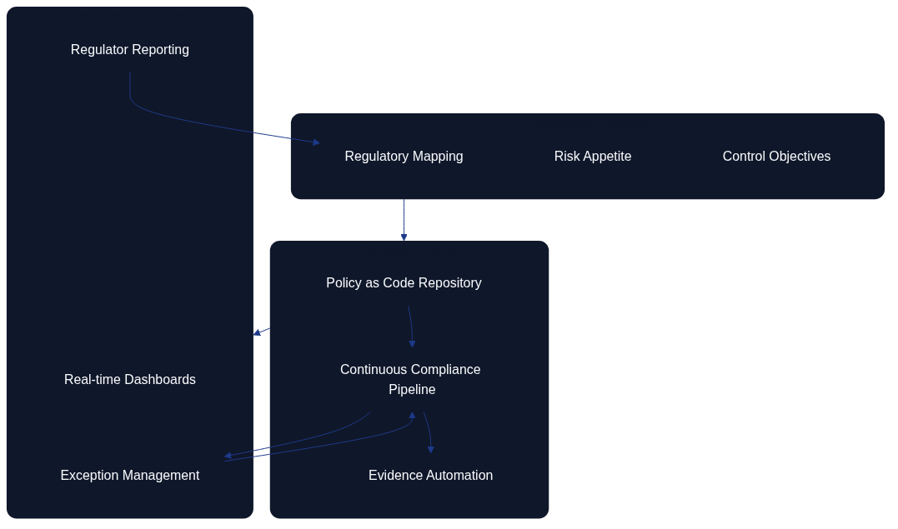

Compliance and Regulatory Adherence

Figure 12.1 illustrates how regulatory intelligence flows into policy templates, automated controls, monitoring, evidence collection, and governance feedback loops.
Architecture as Code is central to meeting the expanding scope of compliance requirements and regulatory expectations. As introduced in Chapter 10 on policy and security, codified policies allow teams to translate legislation into repeatable controls. Figure 12.1 shows how that translation depends on a closed feedback loop. This chapter focuses on the organisational and process-oriented aspects that keep this loop healthy in large-scale environments.
| Compliance Loop Stage | Activities | Outputs | Feedback Mechanism |
|---|---|---|---|
| Regulatory intelligence | Monitor legislation updates, interpret regulatory changes, map requirements | Updated compliance requirements, policy mapping documents | Governance teams receive regulator feedback and audit findings |
| Policy template creation | Codify regulations as policy-as-code templates, define automated controls | Executable policy definitions, control baselines | Policy effectiveness metrics inform template refinements |
| Automated control execution | Deploy policies through CI/CD, enforce guardrails, validate configurations | Compliant infrastructure states, policy violation alerts | Real-time monitoring detects drift and non-compliance |
| Monitoring and evidence collection | Continuous compliance scanning, audit log aggregation, metrics gathering | Compliance dashboards, audit trails, evidence packages | Automated evidence for audits, compliance status reports |
| Governance reinforcement | Audit reviews, risk assessments, improvement initiatives | Updated policies, remediation plans, training programmes | Loop closes as governance informs next regulatory intelligence cycle |
AI and Machine Learning for Compliance Automation
Figure 12.2 demonstrates the feedback loop between telemetry, the AI compliance engine, automated remediation, and human oversight that keeps regulatory posture current.
Artificial intelligence extends the compliance loop by ingesting telemetry, policy breaches, and regulator feedback to flag emerging risks before they become audit issues. Rather than repeating the continuous monitoring workflows described earlier in this chapter, the AI layer focuses on triage: classifying incidents, enriching them with contextual evidence, and recommending automation or escalation paths. Figure 12.2 highlights this control flow. Telemetry and policy violations feed an AI compliance engine that scores risk, orchestrates remediation through Infrastructure as Code updates, and curates evidence packs for review. Human oversight remains central, validating the automated decisions and refining model prompts so that the organisation stays aligned with regulatory expectations.
Requirements Traceability and Validation

Figure 12.3 links high-level compliance requirements to functional controls, Infrastructure as Code artefacts, and verification activities.
Compliance programmes rely on demonstrable traceability between regulatory statements and the technical controls that satisfy them. Figure 12.3 documents that traceability: business, compliance, performance, and cost requirements flow into specific functional controls such as encryption, network segmentation, audit logging, and automated scaling. Those controls are implemented through Terraform configuration and validated by targeted test suites, compliance scanners, and cost analysis. Maintaining this map ensures that every requirement is implemented, tested, and evidenced before auditors ask for proof.
Control Mapping Matrix and "assure once, comply many"
Architecture as Code operationalises the assure once, comply many principle by cataloguing evidence and control mappings in a reusable format. The Control Mapping Matrix links each control identifier to the assurance artefacts captured in CI and to the external frameworks they satisfy. Rather than producing bespoke spreadsheets for ISO 27001, SOC 2, NIST 800-53, GDPR, and internal policies, teams maintain one matrix that references authoritative artefacts from source control.
| Control ID | Control Title | Assurance Artefact(s) | ISO 27001 | SOC 2 | NIST 800-53 | GDPR | Internal |
|---|---|---|---|---|---|---|---|
| SEC-ID-001 | Enforce MFA for human identities | ci/policy-report.json, evidence/mfa-snapshot-YYYYMM.json |
A.5 / A.8 | CC6.1 / CC6.6 | IA-2(1), AC-2 | Article 32 | IAM-01 |
In this worked example, the policy module and evidence pipeline each execute once yet satisfy multiple attestations. Compliance specialists extend the matrix as new frameworks emerge, while automation regenerates evidence on every pipeline run. The template used here is documented in the Control Mapping Matrix appendix so organisations can adapt it to their own environments.
Cloud-native and Serverless Compliance Controls
Serverless computing has moved beyond function-as-a-service into comprehensive event-driven architectures. Architecture as Code must represent triggers, response mechanisms, and orchestrated workflows that adapt to real-time business events without compromising regulatory obligations. Edge computing introduces latency-sensitive workloads and intermittent connectivity, making coordinated configuration management essential across hybrid edge-cloud environments. Tooling must therefore support declarative policies for distributed deployments, data gravity, dynamic routing, and compliance guardrails that operate consistently regardless of where workloads execute.
Policy-driven Infrastructure and Governance

Figure 12.4 visualises how governance strategy translates into automated controls and measurable outcomes.
Policy as Code continues to mature with automated control enforcement, continuous compliance monitoring, and dynamic policy adaptation. Strategy teams map regulatory goals and risk appetite, policy repositories turn those inputs into executable controls, and compliance pipelines provide dashboards, exception handling, and regulator-ready reporting. Figure 12.4 shows how exceptions loop back into the pipeline for remediation and how regulator feedback informs the next iteration of the governance strategy.
Future-facing Considerations (Speculative)
The following topics outline emerging areas that influence long-term compliance strategy. They are exploratory and should be treated as forward-looking guidance rather than current-state requirements.
Quantum Computing Readiness
Quantum computing will require a rethink of security models, cryptography, and resource management strategies. Post-quantum cryptography standards must be integrated into infrastructure security frameworks, and Architecture as Code definitions must be ready to rotate to quantum-resistant algorithms. Quantum-assisted optimisation techniques may support complex placement, routing, and resource allocation problems that are computationally expensive for classical systems, improving efficiency and resilience for regulated services.
Sustainability and Green Computing
Environmental sustainability is a core consideration for infrastructure design and operations. Carbon-aware workload placement shifts compute to regions with renewable energy availability, optimises for energy efficiency, and minimises environmental impact. Architecture as Code should capture lifecycle management, recycling strategies, and sustainability metrics so that green objectives are validated alongside functional requirements and compliance commitments.
Practical Examples
AI-augmented Infrastructure Optimisation
# ai_optimiser.py
import tensorflow as tf
import numpy as np
from datetime import datetime, timedelta
import boto3
class InfrastructureOptimiser:
def __init__(self, model_path):
self.model = tf.keras.models.load_model(model_path)
self.cloudwatch = boto3.client('cloudwatch')
self.autoscaling = boto3.client('autoscaling')
def forecast_demand(self, horizon_hours=24):
"""Forecast infrastructure demand for the next 24 hours."""
current_time = datetime.now()
# Collect historical metrics
metrics = self.collect_historical_metrics(
start_time=current_time - timedelta(days=7),
end_time=current_time
)
# Prepare features for the ML model
features = self.prepare_features(metrics, current_time)
# Generate predictions
predictions = self.model.predict(features)
return self.format_predictions(predictions, horizon_hours)
def optimise_scaling_policies(self, predictions):
"""Automatically adjust Auto Scaling policies based on predictions."""
for asg_name, predicted_load in predictions.items():
# Calculate the optimal instance count
optimal_instances = self.calculate_optimal_instances(
predicted_load, asg_name
)
# Update the Auto Scaling policy
self.update_autoscaling_policy(asg_name, optimal_instances)
# Schedule proactive scaling actions
self.schedule_proactive_scaling(asg_name, predicted_load)
Serverless Infrastructure Definition
# serverless-infrastructure.yml
service: intelligent-infrastructure
provider:
name: aws
runtime: python3.9
region: eu-north-1
environment:
OPTIMISATION_TABLE: ${self:service}-optimisation-${self:provider.stage}
iamRoleStatements:
- Effect: Allow
Action:
- autoscaling:*
- cloudwatch:*
- ec2:*
Resource: "*"
functions:
optimiseInfrastructure:
handler: optimiser.optimise
events:
- schedule: rate(15 minutes)
- cloudwatchEvent:
event:
source: ["aws.autoscaling"]
detail-type: ["EC2 Instance Terminate Successful"]
reservedConcurrency: 1
timeout: 300
memory: 1024
environment:
MODEL_BUCKET: ${self:custom.modelBucket}
predictiveScaling:
handler: predictor.forecast_and_scale
events:
- schedule: rate(5 minutes)
layers:
- ${self:custom.tensorflowLayer}
memory: 3008
timeout: 900
costOptimiser:
handler: cost.optimise
events:
- schedule: cron(0 2 * * ? *) # Daily at 02:00
environment:
COST_THRESHOLD: 1000
OPTIMISATION_LEVEL: aggressive
greenComputing:
handler: sustainability.optimise_for_carbon
events:
- schedule: rate(30 minutes)
- eventBridge:
pattern:
source: ["renewable-energy-api"]
detail-type: ["Energy Forecast Update"]
Quantum-safe Security Implementation
# quantum-safe-infrastructure.tf
terraform {
required_providers {
aws = {
source = "hashicorp/aws"
version = "~> 5.0"
}
tls = {
source = "hashicorp/tls"
version = "~> 4.0"
}
}
}
# Post-quantum cryptography for TLS connections
resource "tls_private_key" "quantum_safe" {
algorithm = "ECDSA"
ecdsa_curve = "P384" # Quantum-resistant curve
}
resource "aws_acm_certificate" "quantum_safe" {
private_key = tls_private_key.quantum_safe.private_key_pem
certificate_body = tls_self_signed_cert.quantum_safe.cert_pem
lifecycle {
create_before_destroy = true
}
tags = {
Name = "Quantum-safe Certificate"
SecurityLevel = "Post-Quantum"
}
}
# KMS keys with quantum-resistant algorithms
resource "aws_kms_key" "quantum_safe" {
description = "Quantum-safe encryption key"
key_usage = "ENCRYPT_DECRYPT"
key_spec = "SYMMETRIC_DEFAULT"
# Enable quantum-resistant key rotation
key_rotation_enabled = true
tags = {
QuantumSafe = "true"
Algorithm = "AES-256-GCM"
}
}
# Quantum-safe VPC with enhanced security
resource "aws_vpc" "quantum_safe" {
cidr_block = "10.0.0.0/16"
enable_dns_hostnames = true
enable_dns_support = true
# Enforce quantum-safe network management
tags = {
Name = "Quantum-safe VPC"
Encryption = "Mandatory"
Protocol = "TLS1.3-PQC"
}
}
Summary
Modern Architecture as Code practices provide the repeatability, transparency, and evidence management demanded by regulators. By codifying policies, enforcing controls through pipelines, and maintaining auditable feedback loops, organisations can demonstrate compliance without sacrificing delivery speed. AI-enabled tooling, serverless platforms, and rigorous traceability matrices ensure that every control remains testable and observable.
Looking forward, teams should monitor speculative developments such as quantum resilience and sustainability reporting so that compliance strategies evolve alongside the regulatory landscape. Success depends on continuous learning, strategic technology adoption, and a long-term vision for resilient infrastructure. As demonstrated throughout this book—from Fundamental Principles of Architecture as Code to Organisational Change and Team Structures—Architecture as Code adapts to meet emerging challenges and opportunities while keeping compliance at the forefront.
Moving from Governance to Delivery
With security controls, policy frameworks, and compliance mechanisms established, we now shift focus to the practical delivery and operational excellence that sustain Architecture as Code implementations. Having established the "what" and "why" of governance, the next part explores the "how" of reliable, repeatable delivery.
Part D examines the testing strategies, implementation patterns, cost optimisation techniques, and migration approaches that organisations need to deliver Architecture as Code successfully. Chapter 13 on Testing Strategies builds on the security and compliance frameworks we've established, showing how to validate that infrastructure meets both functional and regulatory requirements. The subsequent chapters demonstrate practical implementation, financial optimisation, and migration strategies that bring together all the elements covered so far.
Sources and References
- IEEE Computer Society. "Quantum Computing Impact on Infrastructure." IEEE Quantum Computing Standards.
- Green Software Foundation. "Sustainable Infrastructure Patterns." Green Software Principles.
- NIST. "Post-Quantum Cryptography Standards." National Institute of Standards and Technology.
- Cloud Native Computing Foundation. "Future of Cloud Native Infrastructure." CNCF Research.
- Gartner Research. "Infrastructure and Operations Technology Trends 2024." Gartner IT Infrastructure Reports.